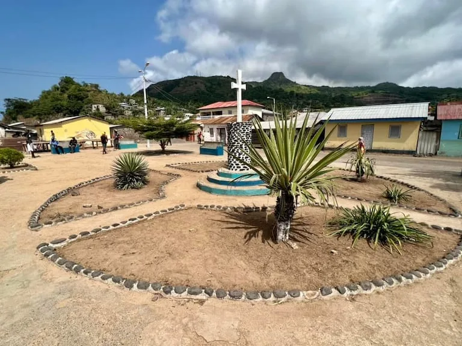

📄 Candidatura
Documento central de presentación de la iniciativa.
AbrirPrograma integral de apoyo a la infancia, la educación y el desarrollo comunitario.
Portal de seguimiento del dossier “Un Juguete, una Ilusión” para la isla de Annobón.
Esta barra refleja una estimación interna de avance documental y no sustituye un seguimiento oficial.
El proyecto “Un Juguete, una Ilusión” se presenta como una iniciativa educativa y comunitaria orientada a la infancia de Annobón. El dossier reúne información de contexto, anexos, referencias, recursos visuales y documentos de seguimiento para apoyar la candidatura.
La propuesta pone el foco en el juego como herramienta de aprendizaje, en la participación de la comunidad y en la mejora de oportunidades para los niños y niñas de la isla.
Documento central de presentación de la iniciativa.
AbrirMaterial complementario sobre contexto, educación y jornada.
Abrir anexoRecursos cartográficos y visuales de la isla y de la región.
Abrir mapaMaterial fotográfico de Annobón y de la propuesta.
Abrir fotografíaDocumentos de apoyo sobre geografía, educación e infancia.
Abrir referenciaLista de verificación para la finalización del dossier.
AbrirVersión final preparada para envío o publicación.
Página HTML en preparaciónGuías de organización y seguimiento del proyecto.
Abrir


{kind=link}
{kind=link}